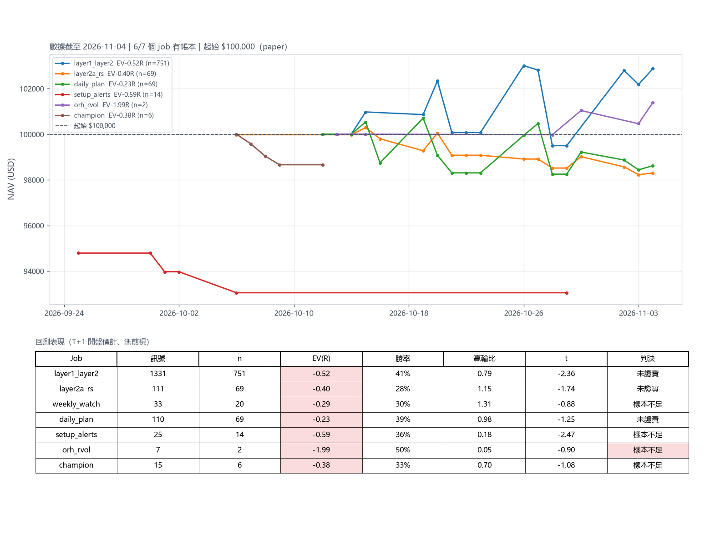
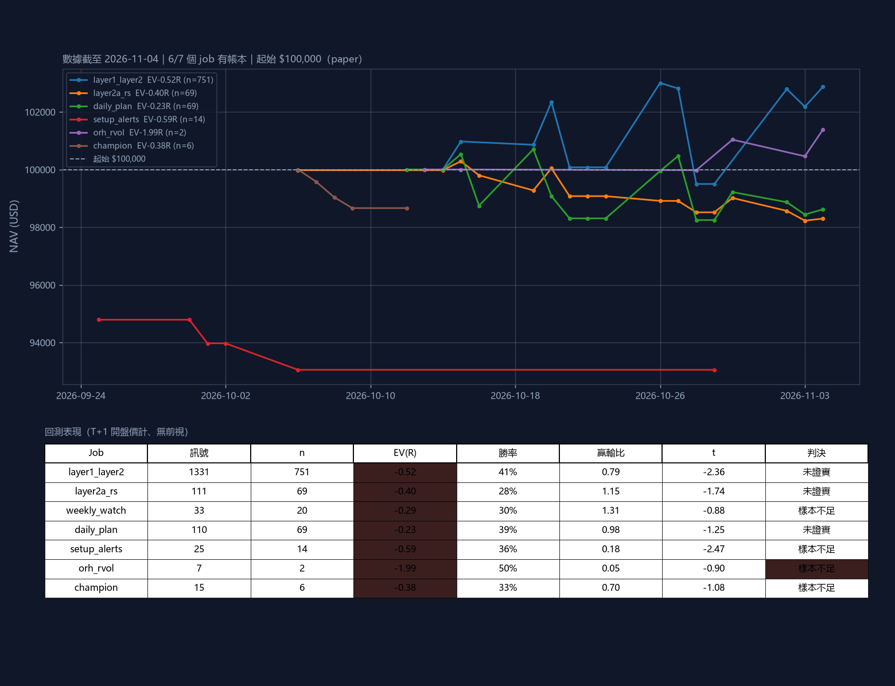

繁體中文版｜骨架蒸餾自 NEL · Market console（逆向工程）｜資料 2026-11-23 19:31


1TDiU6Wt0YYo…｜gid 634720175｜嵌入失敗時請直接開原 Sheet| 日期 | 2026-11-23 |
| 指數燈 | SPY ● QQQ ● IWM ● |
| 站上 20/50/200MA | 18.9% / 42.3% / 47.9% |
| 新高 / 新低 | 3 / 213 |
| 廣度判斷 | 參與度窄 — 只有少數領導股頂住，突破易失敗 |
| 領導 | 半導體 SOXX/SPY 相對 60 日 -19.0% — 領導力轉弱 |
| VIX | 恐慌升溫（高於全部均線）= 收細倉位 |
| 資料 | 2026-11-23T18:40:58.334748 |
| 範圍 | S&P500 (503 loaded) |
| Regime | NEUTRAL |
| Posture | FLAT_WATCH |
| 狀態 | WATCH_ONLY |
| 多空比 | 0.63 |
| ADL | 25.2 |
| 新高新低淨值 | -4.0 |
| 站上 40MA | 38.7% |
| SPY 收市 | 689.81 |
| 備註 | 儲住彈藥，等信號：冇符合 Setup C（<=50MA-2ATR）嘅均值回歸候選之前 = WATCH_ONLY |
| 日期 | 11/20/2026 |
| 升 4%+ 家數 | 75 |
| 跌 4%+ 家數 | 1083 |
| 升/跌 比 | 0.07 |
| 5 日比率 | 0.23 |
| 10 日比率 | 0.51 |
| 升 25%+ (季) | 467 |
| 跌 25%+ (季) | 1,851 |
| 代號 / 行業 | 收市 | X（21EMA） | Y（ATRX） | ATR 帶 | 買入區 | 疊加 | Kell 階段 | 1CM 評級 |
|---|---|---|---|---|---|---|---|---|
| EPC↗ | 28.47 | +0.13 | +0.42 | ★ 買入區 | 6 | ② Wedge Pop | C 邊緣 2/5 | |
| SIBN↗ | 23.73 | +0.47 | +2.06 | ★ 買入區 | 5 | ② Wedge Pop | C 邊緣 2/5 | |
| KNSA↗ | 93.89 | +0.50 | +2.44 | ★ 買入區 | 5 | ② Wedge Pop | C 邊緣 2/5 | |
| CBRL↗ | 70.75 | +0.94 | +3.18 | ★ 買入區 | 5 | ④ Base 'n Break | C 邊緣 2/5 | |
| RGR↗ | 51.66 | +1.02 | +2.69 | — | 4 | ③ EMA Crossback | A 強 4/5 | |
| EVER↗ | 29.00 | +1.24 | +3.41 | — | 4 | ② Wedge Pop | C 邊緣 2/5 | |
| AXGN↗ | 55.75 | +1.54 | +3.80 | — | 4 | ⑤ Exhaustion Extension | B 觀察 3/5 | |
| VIA↗ | 45.80 | +1.70 | +3.83 | — | 4 | ② Wedge Pop | B 觀察 3/5 |